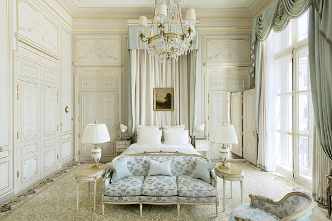
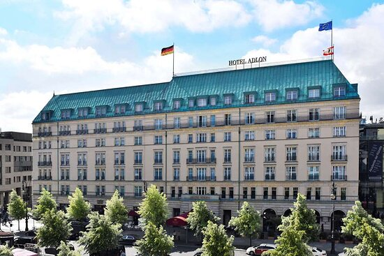
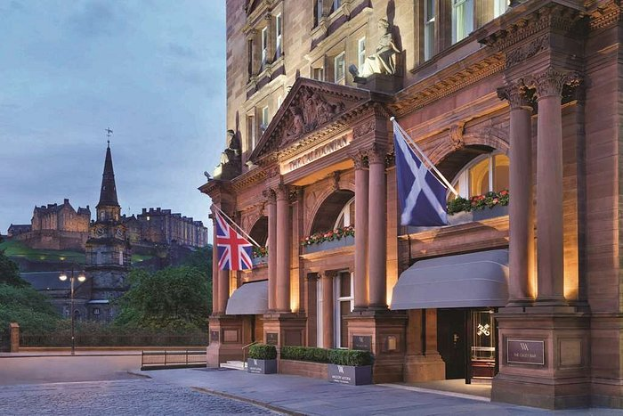

Ritz Paris, França
O Ritz Paris é um dos hotéis mais luxuosos e emblemáticos da Europa. Localizado na Place Vendôme, no coração de Paris, este hotel de cinco estrelas é conhecido por sua elegância atemporal e serviço impecável. O Ritz tem uma longa história de hospedar celebridades, líderes políticos e membros da realeza, e é famoso por sua decoração suntuosa e restaurantes de classe mundial.
Hotel Adlon Kempinski, Berlim, Alemanha
O Hotel Adlon Kempinski é um dos hotéis mais prestigiados de Berlim e oferece uma localização privilegiada ao lado do Portão de Brandemburgo. Com vistas deslumbrantes da cidade, quartos luxuosos e um serviço excepcional, o hotel é um destino popular para viajantes que desejam explorar a capital alemã. Além disso, o restaurante do hotel, Lorenz Adlon Esszimmer, é conhecido por sua culinária sofisticada.
The Caledonian, A Waldorf Astoria Hotel, Edimburgo, Escócia
Este hotel histórico, também conhecido como "The Caley," é um dos locais mais emblemáticos para se hospedar na Escócia. Localizado no centro de Edimburgo, próximo ao Castelo de Edimburgo, o hotel oferece uma combinação de arquitetura tradicional escocesa e comodidades modernas de luxo. Com quartos elegantemente decorados, restaurantes excepcionais e um spa de classe mundial, The Caledonian é uma escolha popular para quem visita a capital escocesa.